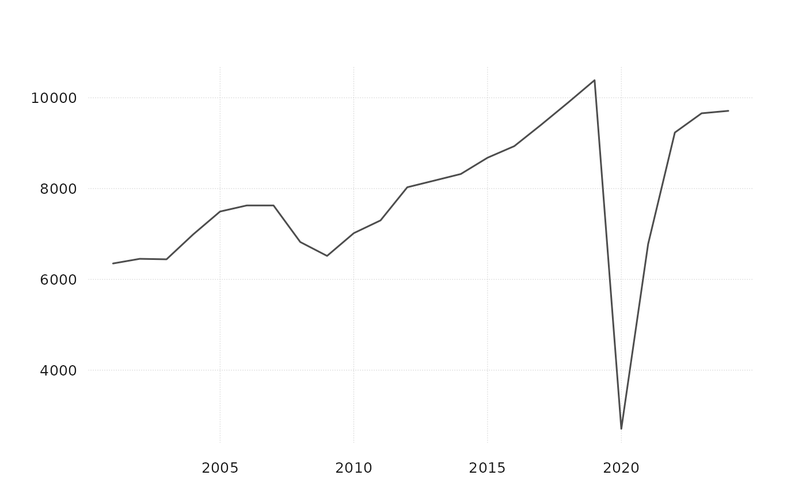

Aggregate time series to a lower frequency
agg.RdAggregate time series to a lower frequency
Usage
agg(
x,
conv_type = "mean",
target_freq = "year",
na_rm = FALSE,
partial = c("drop", "average", "growth", "hold"),
partial_lag = NULL,
partial_n = 3
)Arguments
- x
a ts-boxable object at a high frequency (e.g. monthly or quarterly)
- conv_type
match the aggregated value via "first", "last", "sum", "mean". If conv_type == "uhero" then the name of the time series x is compared to the internal variable
sum_pattern. For matching series names the aggregation is based on "sum"; for all others it is based on "mean."- target_freq
target frequency "year" (default), "quarter", "month", "week"
- na_rm
logical, if TRUE, incomplete periods are aggregated as well. For irregular series, incomplete periods are always aggregated.
- partial
what to do with the LAST period of each series when only part of it has data (e.g. a quarter with one or two months published):
"drop" (default): leave it out, as for any incomplete period.
"average": the mean of the observations so far. Suits rates and volatile prices. Only for series aggregated by "mean".
"growth": a complete earlier period,
partial_lagbefore, grown by the change from the same observations of that period: with October published andpartial_lag = "3 months", Q4 = Q3 x Oct / Jul; with October and November, Q4 = Q3 x mean(Oct, Nov) / mean(Jul, Aug). Suits trending levels."hold": the missing observations of the period set to the mean of the last
partial_nobservations, then aggregated as a complete period. With January to September published andpartial_n = 3, the year is the mean of January to September and three times the mean of July to September. Keeps the latest level, so it suits seasonally adjusted series. Needs monthly or quarterly data.
Incomplete periods before the last are left out. With
na_rm = TRUEevery incomplete period is aggregated from the values present, sopartialhas no effect. "growth" leaves the last period out when the earlier period or its matching observations are missing. Anypartialother than "drop" needs conv_type "mean", "sum" or "uhero".- partial_lag
how far back "growth" looks, as a lubridate period string: the default, NULL, is one target period ("3 months" for quarters, "1 year" for years). "1 year" compares with the same months a year earlier, as
ptd_gr()does.- partial_n
how many of the last observations "hold" averages (default 3). They can reach back into the previous period.
Examples
monthly_data_example |>
agg(conv_type = "sum", target_freq = "quarter")
#> # A tibble: 98 × 4
#> time VISNS_HI VAPNS_HI VADCNS_HI
#> <date> <dbl> <dbl> <dbl>
#> 1 2000-10-01 1686. 1797. 487.
#> 2 2001-01-01 1730. 1774. 531.
#> 3 2001-04-01 1683. 1853. 479.
#> 4 2001-07-01 1650. 1835. 486.
#> 5 2001-10-01 1287. 1440. 402.
#> 6 2002-01-01 1558. 1655. 489.
#> 7 2002-04-01 1600. 1773. 460.
#> 8 2002-07-01 1701. 1900. 502.
#> 9 2002-10-01 1594. 1765. 471.
#> 10 2003-01-01 1580. 1730. 491.
#> # ℹ 88 more rows
# the last quarter estimated from the months published so far
monthly_data_example |>
utils::head(-1) |>
agg(target_freq = "quarter", partial = "growth") |>
utils::tail(2)
#> # A tibble: 2 × 4
#> time VISNS_HI VAPNS_HI VADCNS_HI
#> <date> <dbl> <dbl> <dbl>
#> 1 2024-10-01 819. 933. 228.
#> 2 2025-01-01 822. 907. 262.
monthly_data_example |>
agg(conv_type = "uhero", target_freq = "quarter")
#> # A tibble: 98 × 4
#> time VISNS_HI VAPNS_HI VADCNS_HI
#> <date> <dbl> <dbl> <dbl>
#> 1 2000-10-01 1686. 1797. 162.
#> 2 2001-01-01 1730. 1774. 177.
#> 3 2001-04-01 1683. 1853. 160.
#> 4 2001-07-01 1650. 1835. 162.
#> 5 2001-10-01 1287. 1440. 134.
#> 6 2002-01-01 1558. 1655. 163.
#> 7 2002-04-01 1600. 1773. 153.
#> 8 2002-07-01 1701. 1900. 167.
#> 9 2002-10-01 1594. 1765. 157.
#> 10 2003-01-01 1580. 1730. 164.
#> # ℹ 88 more rows
monthly_data_example |>
agg(conv_type = "uhero", target_freq = "quarter") |>
tsbox::ts_long() |>
disagg(conv_type = "uhero", target_freq = "month") |>
tsbox::ts_wide() # keeps the quarterly averages, not the monthly pattern
#> # A tibble: 294 × 4
#> time VISNS_HI VAPNS_HI VADCNS_HI
#> <date> <dbl> <dbl> <dbl>
#> 1 2000-10-01 558. 602. 158.
#> 2 2000-11-01 561. 600. 161.
#> 3 2000-12-01 567. 596. 168.
#> 4 2001-01-01 577. 590. 177.
#> 5 2001-02-01 579. 589. 179.
#> 6 2001-03-01 574. 595. 175.
#> 7 2001-04-01 562. 607. 163.
#> 8 2001-05-01 558. 618. 158.
#> 9 2001-06-01 563. 629. 159.
#> 10 2001-07-01 575. 639. 166.
#> # ℹ 284 more rows
# works with a single series too
monthly_data_example |>
tsbox::ts_long() |>
tsbox::ts_pick("VISNS_HI") |>
agg(conv_type = "uhero", target_freq = "year") |>
tsbox::ts_plot()
